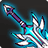
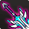
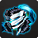
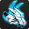
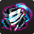
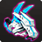
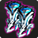
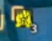
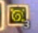
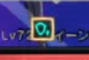

<!DOCTYPE html>
<html lang="en-US">


<head>
<title>Lunar Fall Guide</title>
</head>


<body style="background-color:powderblue;">
<h1></img></h1>

<h2 title="Please Kill Me" style="color:yellow;font-size:600%;position:relative; ;text-align:center;width: 40%;
  margin-left: 30%;margin-top:-20px;
 
 border-bottom-style: solid;
  border-top-style: solid;
  border-right-style: solid;
  border-left-style: solid;
  border-bottom-width: 4px;
  border-top-width: 4px;
  border-right-width: 4px;
  border-left-width: 4px;
  border-top-left-radius: 10px;
  border-top-right-radius: 10px;
  border-bottom-right-radius: 10px;
  border-bottom-left-radius: 10px;">LaRAPEdia</h2>
  
  
  
<br>
<div align="center"
style=" 
 width: 20%;
  margin-left: 40%;
 margin-top:-80px;
 border-bottom-style: solid;
  border-top-style: solid;
  border-right-style: solid;
  border-left-style: solid;
  border-bottom-width: 4px;
  border-top-width: 4px;
  border-right-width: 4px;
  border-left-width: 4px;
  border-top-left-radius: 10px;
  border-top-right-radius: 10px;
  border-bottom-right-radius: 10px;
  border-bottom-left-radius: 10px;"
  


>
<a href="https://razormaniak.github.io/" style="font-size:300%;margin-right:20px;">Guides</a>
<a href="https://docs.google.com/spreadsheets/d/1VLLAn5S5w9jI6TJ9dLVFPIr8kfI_NSoiMQYihP1ydR8/edit?usp=sharing" style="font-size:300%;margin-right:20px;">Wikia</a>
</div>

<br>
<br>
<br>
<br><br><br>
<div align="center"
style=" 
 width: 80%;
  margin-left: 10%;
 margin-top:-80px;
 border-bottom-style: solid;
  border-top-style: solid;
  border-right-style: solid;
  border-left-style: solid;
  border-bottom-width: 4px;
  border-top-width: 4px;
  border-right-width: 4px;
  border-left-width: 4px;
  border-top-left-radius: 10px;
  border-top-right-radius: 10px;
  border-bottom-right-radius: 10px;
  border-bottom-left-radius: 10px;
  background-color:#D3D3D3;"

><h3 style="font-size:300%;">Lunar Fall Explained</h3>
<br>
<div style="font-size:200%;" align="left"><pre>
	Your Second real raid you are going to play.
				This time 8-man
	
  First : the pre-requisites and info needed before playing.
	-At least level 68
	-An HH set
	-At least 2100 ACCURACY
	-At least 60 crit rate
	-At least 60k AP (max atk + cdmg)
	-<b>MINIMUM</b> 40 Penetration
	-<b>MINIMUM</b> 35 CDR (44 or go home)
		
	Team Hearts advised since one wipe will lead into a lot of wipes! </img> </img> </img>
	
  Second : the gear and order you should get it.
	-Weapon : ST and EX , never get ST , +9 first
	</img> </img>
	-Armor : ST and EX
		=ST is very good after rework
		</img> </img> </img> </img>
		=EX requires you to have exactly 155/160 stamina
			and you need to play at very low stamina all the time
			in order to get a moderate damage boost
			</img> </img> </img> </img>
	-Accesories: Ignore until you have them perfect rolled </img> </img> </img> </img>
		=Perfect HH accs > any LF accs
		=Perfect LF accs <b>Slightly better</b> than HH accs
			  
  Third : mechanics and roles.
	-This fight is split up into 2 major and 2 minor fights
	-First major fight is split up into 2 minor ones
		=Aculus and Edgar will both be present on the field
			but you will focus on one of them at a time
		=The whole team will fight Aculus while only one will draw the aggro on Edgar
				known as "Edgar Mark"
				
		=Aculus fight is straight , just kill him fast fast very fast
		=At certain intervals of time , Edgar will channel a laser
			Edgar Mark has to aim that laser towards Acculus
	<video width="960" height="540"  muted controls>
  <source src="lunaLaser.mp4" type="video/mp4">
Your browser does not support the video tag.
</video>
			
			
			
			
		=While the laser is channeled , Aculus gains a massive
			HP REGEN and ATTACK buff
			that will only be removed by the laser
		=After you kill Aculus , go and deal with Edgar
		
		=Theres also a debuff that builds up over time ,gives you cdmg and at 5 stacks you die
			</img>
		
		=Note this move kills you very fast
		
	<video width="960" height="540"  muted controls>
  <source src="lunaEdgarOrb.mp4" type="video/mp4">
Your browser does not support the video tag.
</video>
		
		=And this one can be dodge spammed or 42
		
	<video width="960" height="540"  muted controls>
  <source src="lunaExplosion.mp4" type="video/mp4">
Your browser does not support the video tag.
</video>
	
	
	-The Second major fight is against queen
	
	-Here more roles need to be assigned
		=Pool Mark 
		  Those pools remove the building debuff </img>
		  They do <b<FIXED</b> damage 15 000?
		  Pools stick on the closest target to them and after some time they release 
		  on the ground , its advised to put them on the sides close to queen but far 
		  enough so it doesnt make it impossible to attack
		  
	<video width="960" height="540"  muted controls>
  <source src="lunaPool.mp4" type="video/mp4">
Your browser does not support the video tag.
</video>
		=Ice Totem Mark
		  One of the 3 totem moves that queen does is freeze totem 
		  Shortly after signaled , a freezing totem will aggro to the closest target , 
		  its spawning location is (invisible) but at a moderate distance in front of queen , 
		  it will teleport and freeze for a long period of time all targets in an AOE
		  Ice Mark must go there and get frozen (or use EX to dodge the freeze) and all other 
		  totem markers will come and destroy it , else it will blink and freeze again
		  
	<video width="960" height="540"  muted controls>
  <source src="lunaFreeze.mp4" type="video/mp4">
Your browser does not support the video tag.
</video>
		=Totem Mark
		  Preferably 4 people in total , will hunt the exploding totems and freeze totem 
		  You can see them on minimap , leave them alone and they will explode , killing everyone
		  
	<video width="960" height="540"  muted controls>
  <source src="lunaBoom.mp4" type="video/mp4">
Your browser does not support the video tag.
</video>
		=Laser Totems
		  The third totem summoning abiliy and the least dangerous , summons a lot of 
		  small totems that teleport to players and stun after a short channel time , 
		  this is accompanied by queen dragging everyon in front of her , 
		  if all team uses 42 skills , they pose 0 threat
	=<b>BELIEVER</b>
		Queen gets a DAMAGE REDUCTION BUFF </img>
		once you see this , panik and go to the middle of the arena
		this is the dps test you must pass else the run will turn a nightmare
		beat the believer before he reaches queen else its team wipe 
		and her defence buff will persist for 1 minute
	IF you fail this it will become overwhelmingly hard so avoid at all cost!!
	
	<video width="960" height="540"  muted controls>
  <source src="lunaBeliever.mp4" type="video/mp4">
Your browser does not support the video tag.
</video>
		
	
	-Gear line priority : 
		-Weapon : PENETRATION | BOSS DMG | CRIT DAMAGE
		-Armor : COOLDOWN REDUCTION | CRIT RATE | CRIT DAMAGE
		-Accesories:
			=Rings : CRIT RATE | CRIT DAMAGE | ACCURACY
			=Pendant/Earrings : ATTACK SPEED | COOLDOWN REDUCTION
 </pre></div>


 </div>


</body>


</html>